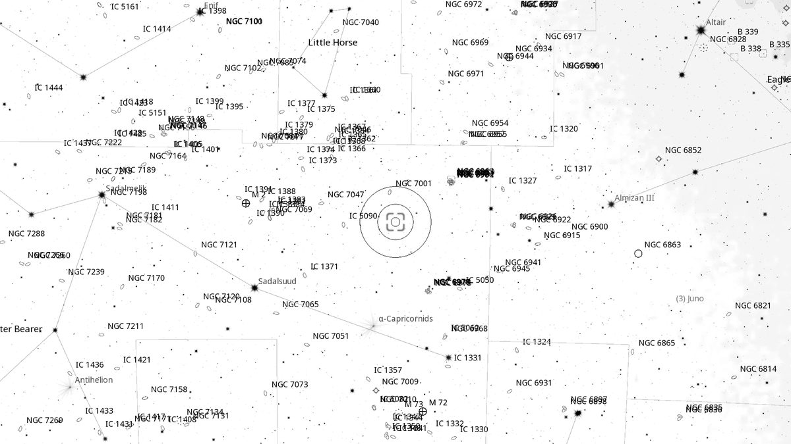
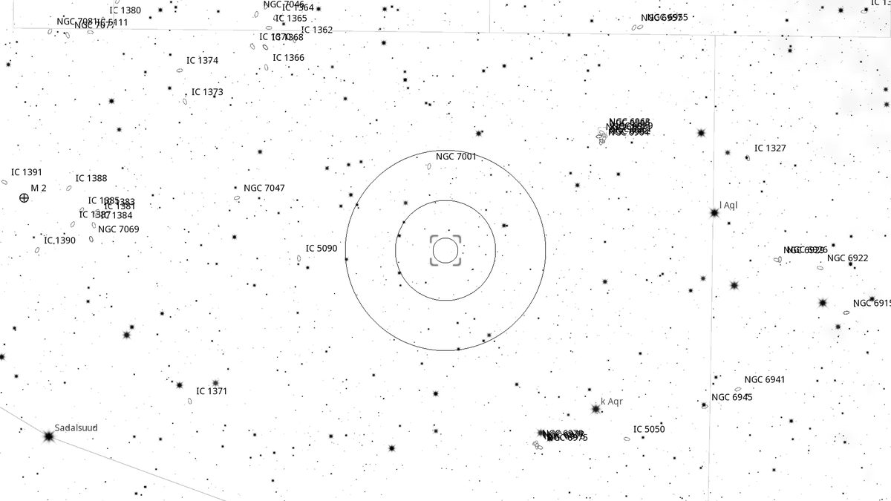
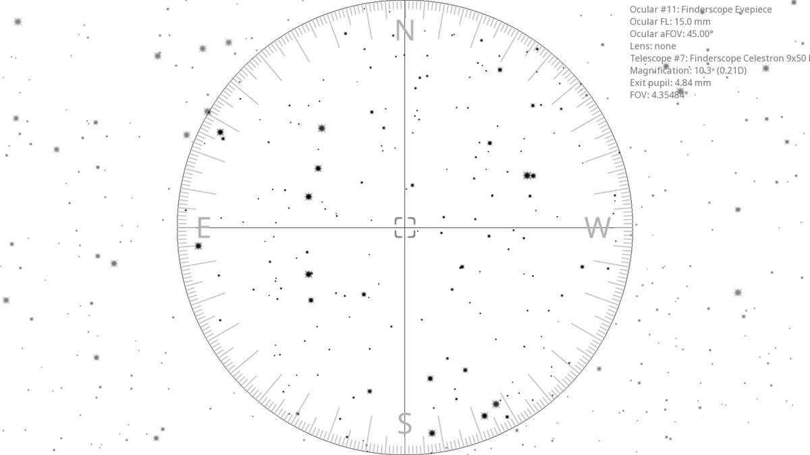
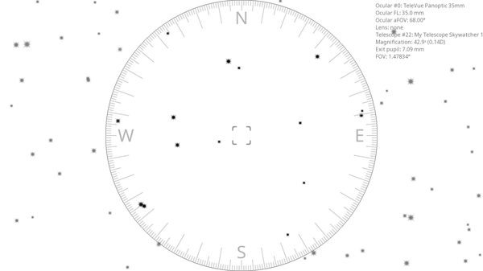

UGC 11658 (Gal)
Galaxy in Aquarius
| R.A. | Dec. | Size | Mag | SB | Class | Type | Distance | Chart |
|---|---|---|---|---|---|---|---|---|
| 20h 59m 49.6s | -01° 52′ 16.7″ | 33″ | -- | 12.5 | Srs... | Gal | -- | -- |

Source: POSS-2 UK Schmidt Red (STScI) | Field: 10′ × 10′
Interactive Sky View
Loading interactive sky view…
Powered by Aladin Lite / CDS, Strasbourg.
Pan, zoom, or switch surveys using the layer icon.
Background
UGC 11658 is the fainter and the more interesting half of the pair: a Seyfert 2 galaxy, its nucleus energised by an accreting central black hole. It appears as VV 668 in Vorontsov-Velyaminov's catalogue of interacting systems and as the infrared source IRAS 20571-0204, and lies ≈272 million light-years away — the same distance as UGC 11657 to within the measurement errors. No V magnitude has ever been measured for it; at B = 14.4 and some 22” across it is much the harder of the two, and the challenge is to show it as anything more than a stellar point.
My Observing Notes
(Not yet observed)
Charts

Ultra-wide view (~25° field)

Wide-field view with Telrad rings (4°, 2°, 0.5°)

Finderscope view (9×50 RACI, ~4.4° TFOV)

Eyepiece view — 35 mm Panoptic on 12-inch f/5 (1.6° TFOV)